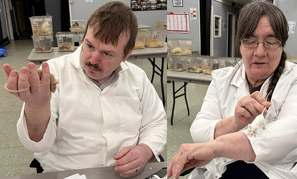

Harlow March NMC Open Show Results

Harlow NMC Open Show
EXHIBITS: 136 EXH’ORS: 13
[9 absent exhibits. 8 classes with no entries]
BIS N Smith A Argente
BOA P Hogg U Silver Satin
BEST SELF J Mullan U Fawn
BEST OA SELF R Hogg AB Silver
BEST TAN P Hogg AB Silver Tan
BEST OA TAN Chew Valley Stud U Champagne Tan
BEST MKD Chew Valley Stud A Dutch
BEST OA MKD M Davis U Hereford
BEST SATIN P Hogg AB Ivory Satin
BEST OA SATIN BOA P Hogg U Silver Satin
BEST AOV BIS N Smith A Argente
BEST OA AOV J Mullan U Argente
BEST JUNIOR L&O Booth U Splashed
Judge: Lynette Walker SELF, MARKED, AOV
Firstly thanks to Terry Sales for the invite to judge at the Harlow open show. Its been a long time since I last judged in the 1990s. Also I would like to thank my steward Derek Creasey for doing a good job.
The Selfs were a mixed bag of good and not so good. Lots of mice had nicks in their ears; moult, scabs, and a couple that were over-developed, and some should of not been show as far too small. The Marked was a small section. The AOV’s were the biggest and best by far!!
Well done to Neil Smith with BIS with a beautiful adult Argente doe! It stood out a mile! I hope to judge again sometime soon as I enjoyed it immensely.
SELF: PEW AD [10/6] 1 J Mullan (D) Shiny coat, good under and ears - fit mouse wins on condition. 2 T Sales (B) Good type, fit, not much between first and second. 3 P Hogg (D) Good colour, good ears and fit mouse. PEW U8 [5/4] 1 P Hogg Lovely U8, under and ears - good, fit mouse, shine on coat good. 2 T Sales Fit, shine on coat, ears good,moult on nose and line under. 3 P Hogg Moult on nose, fit condition, just beaten on ears. CREAM AD [1/1] 1 N Smith (B) Under developed, too small for an adult and was moulting. CREAM U8 [1/1] 1 N Smith (B) Under-developed - far too small and should still be with its mum. CHAM/SILVER AD [3/2] 1 R Hogg (Silver) (B) Fit nice colour, slight tan vent. 2 G Ward (Silver) (D) Small for an adult, colour ok, tan vent. 3 G Ward (Silver) (D) Light white nose, tan vent, moulting and ears small. CHAM/SILVER U8 [1/1] 1 R Hogg (Silver) (B) Nice baby but too dark, moulting on the face. BLACK AD [2/2] 1 M Davis Nice doe - good try! Colour has no shine, tan hairs and tan vent. 2 J Mullan Colour not black enough, tan vent, white toe nails, poor ears. BLACK U8 [4/3] 1 N Smith (B) Not black enough, tan hairs and vent. 2 R Hogg Also not black enough, tan vent and moulting. 3 N Smith Tan vent, dull coat and white toe nails. BLUE AD [1/1] 1 G Ward (B) Top colour not dark enough, under too light almost white. BLUE U8 [1/1] 1 L&O Booth (D) Colour good for an U8, fit mouse condition was good, slight tan vent. AOC SELF AD [3/2] 1 J Mullan (RED) (B) Colour ok needs to be slightly darker, bold eyes has bit of moult - wins on colour. 2 J Mullan (FAWN) (B) Far too light and a lot of moult. AOC SELF U8 [5/3] 1 J Mullan (Fawn) (D) A good top and under, nice deep rich colour, fit and a good type, wins on colour. 2 M Davis (Chocolate) (D) Good colour, wins 2nd on colour, tan vent and fit. 3 M Davis (Chocolate) (D) As second but has more of a tan vent, but fit. SELF CHALLENGE AD [20/7] 1 R Hogg Silver (B) 2 M Davis Black (D) 3 J Mullan PEW (D). SELF CHALLENGE U8 [17/7] 1 J Mullan Fawn (D) 2 M Davis Chocolate (D) 3 R Hogg Silver (B).
MARKED: DUTCH AD [2/1] 1 Chew Valley Stud (B) Choc saddle good, zip under cheek patches go under chin. 2 Chew Valley Stud (B) Zip on saddle on top and bottom, not as good as winner. DUTCH U8 [2/1] 1 Chew Valley Stud (B) Zip under on saddle, cheek patches go under chin, too small for an U8. 2 Chew Valley Stud (D) Zip on top and under the saddle, cheek patches go behind the ear again, small U8. BROKEN/EVEN AD [4/3] 1 A Booth (D) Red broken, fit and good condition, seven spots a bit big and splodgy. 2 R Hogg(D) Six spot black broken, large spots more like patches, condition ok. 3 R Hogg (B) Six spot black broken, rather patchy, condition not as good as 2nd. BROKEN/EVEN U8 [2/2] 1 L&O Booth (D) Red broken - fit, spots too much like patches, more even than broken. 2 A Booth (D) Black broken hardly any spots, needed more, but fit and good condition. HEREFORD AD [4/2] 1 C Barber (D) Nice blaze under, better than the other two, and fit. 2 M Davis (D) Blaze ok, marking under too wide. 3 C Barber (D) Blaze ok, marking under has a zip in wide white marking. HEREFORD U8 [2/1] 1 M Davis (D) Marking under thin but wiggly. 2 M Davis (B) As winner under marking rather wide. MARKED CHALLENGE AD [10/5] 1 Chew Valley Stud (Dutch) 2 R Hogg (Broken/Even) 3 A Booth (Broken/Even) MARKED CHALLENGE U8 [6/4] 1 M Davis (Hereford) 2 Chew Valley Stud (Dutch) 3 A Booth (Broken/Even)
AOV: AGOUTI/CINNAMON AD [3/3] 1 A Booth (Agouti) (B) Fit, good condition, golden colour lovely. 2 L&O Booth (Agouti) (B) Fit, good condition and colour, slight moult mark on back. 3 J Mullan (Agouti) (D) Far too dark and moult under. AGOUTI/CINNAMON U8 [1/1] 1 J Mullan (Agouti) (D) Lovely U8, fit and great condition, type good for U8, slightly too young. HIMALAYAN/SIAMESE AD [5/3] 1 M Davis (SP Siamese) (D) Shading ok, nice points, moult mark on back. 2 N Smith (BP Siamese) (B) Points light, type not as good as winner, moulting. 3 N Smith (BP Siamese) Shading ok, moulting, not as good as the winner or 2nd. HIMALAYAN/SIAMESE U8 [3/2] 1 M Davis (Himalayan) (D) Fit, colour ok, good condition, points rather light. 2 M Davis (SP Siamese) (D) Points good, white toe nail, fit but moult on under. 3 Chew Valley Stud (SP Siamese) Moulting, white toe nails, points too light. CHINCHILLA/FOX AD [3/1] 1 N Smith (Lilac Fox) (B) Good white under, big type, colour on top good, and some good ticking. 2 N Smith (Fox) (B) Top good, under yellowish, nice ticking on sides. CHINCHILLA/FOX U8 [2/1] 1 N Smith (Lilac Fox) (B) Under was quite nice but under-developed, too young should be left with mum for a few more weeks. 2 N Smith (Black Fox) (B) Under not as white, under-developed should have stayed with mum. ARGENTE AD [6/6] 1 N Smith Big Argente doe, fit and typy, lovely blue under, coat, and top colour, best adult by far. 2 P Hogg (B) Big type, fit, colour too light but good condition, would make a good stud buck. 3 J Mullan (D) Colour darker than the other two, blue under light, moult-mark on the neck. ARGENTE U8 [2/2] 1 J Mullan (D) Lovely baby, top colour and blue under, good for U8, fit mouse. SPLASHED AD [1/1] 1 L&O Booth (D) Splashed pattern too light top and under, but fit adult. SPLASHED U8 [1/1] 1 L&O Booth (D) Lovely on top, under double coloured light on one side and darker on the other with line down the middle, fit mouse and in good condition. SILVERED/PEARL AD [2/1] 1 E Jukes (B) Pearl nice colour, big bold eyes and fit, wins on colour. 2 E Jukes (B) Pearl as first, colour a bit too dark. AOV AD [2/1] 1 T Sales (D) Sable nice doe, under blend into top good, better ears than second, and it's fit. 2 T Sales (B) Sable nice colour top and under, small ears and white toenails, fit. AOV U8 [1/1] 1 T Sales (B) Sable nice type, and top and under good, and fit. AOV CHALLENGE AD [22/10] 1 N Smith Argente 2 N Smith Lilac Fox 3 T Sales Sable AOV CHALLENGE U8 [10/7] 1 J Mullan Argente 2 J Mullan Agouti 3 M Davis Himalayan
Judge: Robert Walker TAN, SATIN
Firstly, I would like to thank Terry for inviting me to judge at the NMC open show in Harlow, for my very first ever judging appointment. I absolutely enjoyed my first show being a judge I would also like to thank my Steward Robert Hogg for a job well done. The tans was a mixed bunch with some really good exhibits and some poor exhibits, I took my time and got through them. The satins were the better section. Congratulations to Peter Hogg with BOA in show with a stunning Silver Satin U8 and congratulations to Neil Smith on his BIS. It was great to be judging alongside my wife who has taught me a lot. Also a big thank you to Peter (Pete’s Eats) for keeping us fuelled.
TAN: BLACK TAN AD [3/2] 1 N Smith (B) Nice bright bold eyes high sheen on coat, wins on condition, tan and top. 2 N Smith (B) Nice tan and top colour. 3 C Barber (B) Fair tan, small ears. BLACK TAN U8 [1/1] 1 N Smith (D) Crimpled ears, matchstick tail, nice tan. CHAMPAGNE TAN AD [7/5] 1 Chew Valley Stud (B) Lovely top colour and lovely tan. 2 C Barber (D) Excellent mouse, nice ear set, nice thick tail. 3 Chew Valley Stud (B) Dark top tan, not as good as others, but had a lovely ear-set. CHAMPAGNE TAN U8 [8/3] 1 Chew Valley Stud (B) Nice top colour, fair tan, nice ear-set, but nervous. 2 G Ward (B) Dark top, tan ok, needs improvement. 3 G Ward (D) Dark top, baggy condition, chip in ear. DOVE TAN AD [1/1] 1 J Mullan Over-aged, top too dark for a Dove, tan was nice. DOVE TAN U8 [3/2] 1 Chew Valley Stud (D) Lovely top colour, fair tan, nice ears. 2 J Mullan (B) Too dark, but has less faults than 3rd. 3 Chew Valley Stud (B) Too dark, chip in ear. CHOCOLATE TAN U8 [2/1] 1 N Smith (B) Nice top and tan. 2 N Smith Condition is behind first place. AOC TAN AD [3/2] 1 P Hogg (B) Silver Tan Excellent mouse, excellent top colour and tan, best mouse in this section. 2 N Smith (B) Blue Tan not bad tan for Blue Tan, nice top colour. 3 N Smith (B) Blue Tan OK tan for this variety, fair top, but thin tail. AOC TAN U8 [1/1] 1 N Smith (B) Blue Tan Nice top colour OK even tan for this variety. TAN CHALLENGE AD [17/6] 1 P Hogg Silver Tan 2 N Smith Black Tan 3 C Barber Champagne Tan TAN CHALLENGE U8 [15/5] 1 Chew Valley Stud Champagne Tan 2 Chew Valley Stud Dove Tan 3 N Smith Chocolate Tan
SATIN: IVORY AD [4/4] 1 P Hogg (B) Nice bright bold eyes, high sheen on coat. 2 R Hogg (D) Nice ear set, nice mouse but not as good as 1st. 3 T Sales (B) One eye smaller than the other, nice ear set and satin coat. IVORY U8 [3/2] 1 A Booth (D) Nice bright eyes, good ears, nice satin. CREAM SATIN AD [1/1] 1 N Smith Fair satin, nice ears and eyes. CREAM SATIN U8 [1/1] 1 A Booth (D) Nice bold eyes, nice satin coat, nice mouse. CHAM/SILVER SATIN AD [2/1] 1 P Hogg (D) Silver Satin, nice bold bright eyes, lovely satin coat. 2 P Hogg (B) Tan muzzle and tan vent. CHAM/SILVER SATIN U8 [1/1] 1 P Hogg (B) Silver Satin Bright bold eyes, lovely ears, high sheen on coat, excellent-looking mouse. AOV SATIN AD [4/3] 1 R Hogg (D) Champagne Tan Good eyes and ears, nice satin. 2 R Hogg (B) Champagne Tan Nice satin, but not as good as first. 3 M Davis (D) Siamese Moult on neck, satin was ok, nice points. SATIN CHALLENGE AD [12/7] 1 P Hogg Ivory (B) 2 P Hogg Silver Satin (D) 3 R Hogg Champagne Tan Satin (D) SATIN CHALLENGE U8 [7/5] 1 P Hogg Silver Satin (B) 2 A Booth Ivory Satin (D) 3 A Booth Cream Satin (D)
GRAND CHALLENGE AD [81/13] 1 N Smith Argente 2 N Smith Fox 3 R Hogg Silver GRAND CHALLENGE U8 [55/11] 1 P Hogg Silver Satin 2 J Mullan Fawn 3 Chew Valley Stud Champagne Tan SUPREME CHALLENGE AA [136/13] 1 N Smith Argente 2 N Smith Fox 3 R Hogg Silver STUD BUCK [15/4] 1 P Hogg Argente 2 P Hogg Silver Tan 3 R Hogg Silver JUNIOR [7/1] 1 L&O Booth Splashed 2 L&O Booth Broken 3 L&O Booth Agouti RARE VARIETY AA [10/3] 1 N Smith Fox 2 N Smith Fox 3 T Sales Sable
Photographs: Eric Jukes